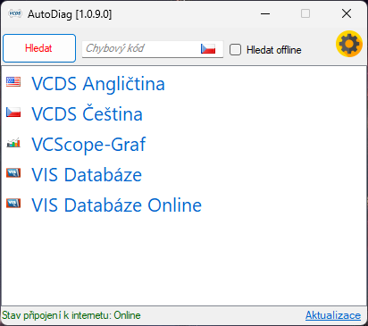

Nástroj pro spuštění diagnostiky a vyhledávání chyb
Tato aplikace vám zjednoduší a urychlí spuštění diagnostického nástroje VCDS a zároveň umožní rychlé vyhledávání chybových kódů.
Klíčové funkce:
- Rychlé spuštění VCDS: Okamžitý přístup k diagnostickému nástroji VCDS.
- Vyhledávání chybových kódů:
- Offline: Vyhledávejte chybové kódy v češtině i bez připojení k internetu.
- Online: Získejte přístup k rozsáhlé anglické databázi chybových kódů (vyžaduje připojení k internetu).
- Jednoduché rozhraní: Minimalistické a intuitivní rozhraní pro snadné použití.
- Přizpůsobitelné nastavení: Možnost nastavit cestu k VCDS a další parametry dle vašich preferencí.
- Úspora času: Šetří váš čas a usnadňuje práci s diagnostikou.
Stáhnout Program
Poznámka: Autor neodpovídá za případné škody způsobené nesprávným použitím aplikace nebo diagnostického nástroje VCDS. Používání aplikace a VCDS je na vlastní riziko.